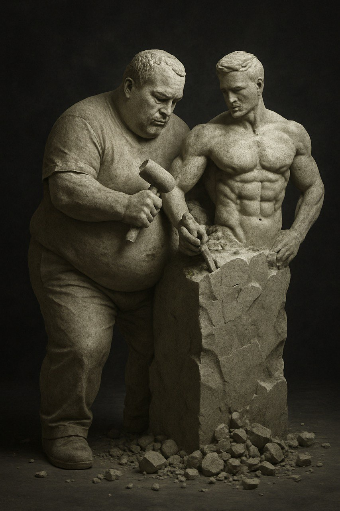
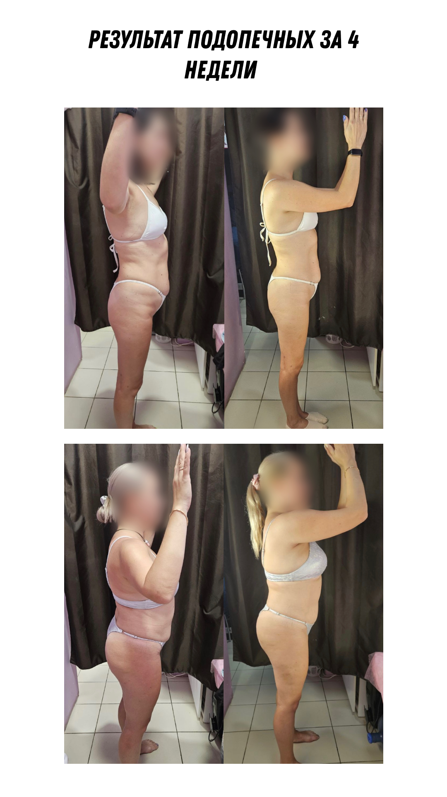
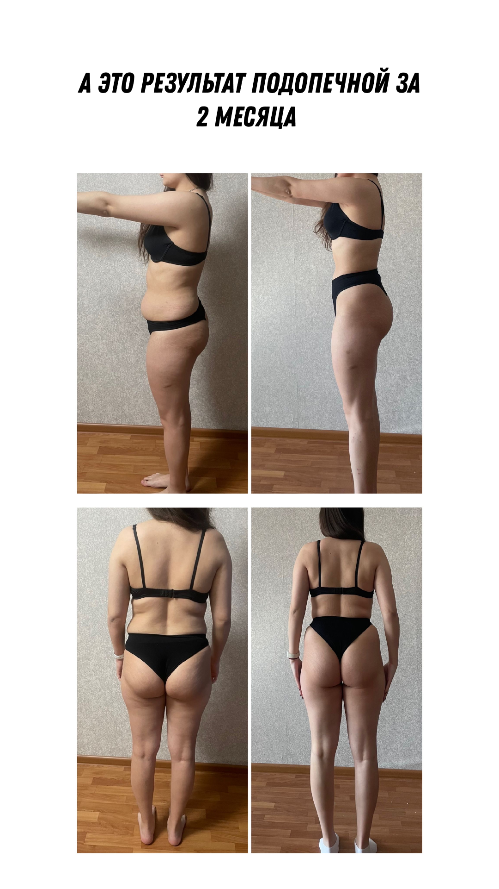
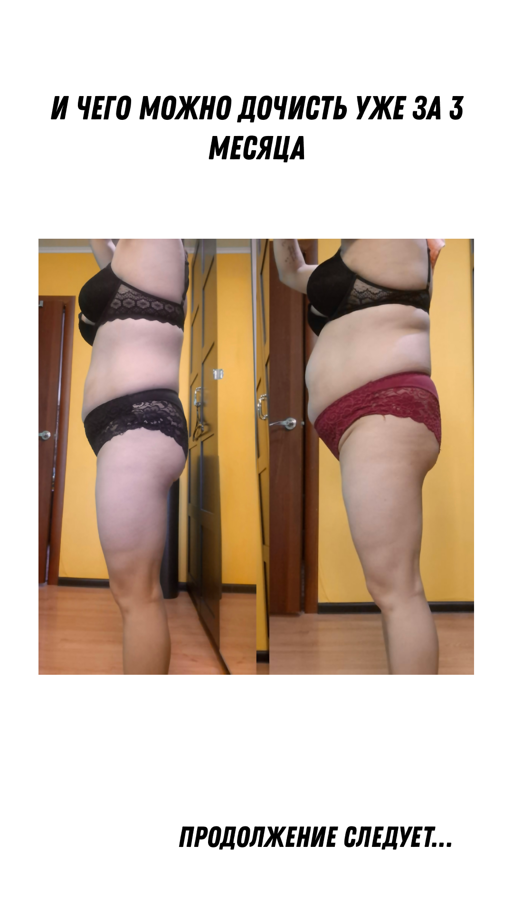

или почему жир всегда побеждает
Если ты сейчас ждёшь очередной "волшебный" способ похудеть за 7 дней к свадьбе бывшего, или хочешь сжечь жир, лежа в постели листая REELS — остановись!
Вы не одни такие. Все мы попадались на удочку "планок до 7 пота" и "голодных марафонов".
Я расскажу, как это работает на самом деле, без пыли в глаза и с гарантированным результатом — только, конечно, надо делать, а не надеяться.
Все думают, что похудение — это изнурительные тренировки до полусмерти и диеты на одном огурце. Нет! Жир уходит не от 1000 бёрпи, а от дефицита калорий.
Ты должен тратить энергии бодьше — чем получаешь с едой. Всё, никакой магии.
Диета — это не "не есть", а рациональный подход: что ты будешь есть. Меньше жирного, больше углеводов и белка.
Почему мы жрём ночью и срываемся с диет?
Нет, ты не слабовольный. У нас так работает мозг. Когда ты мучаешь себя тренировками или голодом, твоя психика включает режим защиты — и в итоге ты жрёшь, куришь и листаешь рилсы одновременно, потому что мозг требует компенсацию.
Это называется REWERD SYSTEM — и она сильнее, чем твой список целей на год.
Не борись с собой. Настраивай свою систему так, чтобы получать удовольствие от новых привычек: силовые тренировки, вкусная и менее калорийная еда, ощущение контроля — это работает.
Силовые тренировки — лучший жиросжигатель, о котором ты не знал!
Забудь про бег на дорожке, как способ похудеть. Это как кричать на холодильник, чтоб перестал кормить тебя ночью.
МЫШЦЫ — это эндокринный орган, который влияет на кучу аспектов здоровья:
Что делать дальше? (если не хочется сорваться снова)
Такие результаты получают мои подопечные — без строгих диет и изнурительных тренировок.
  